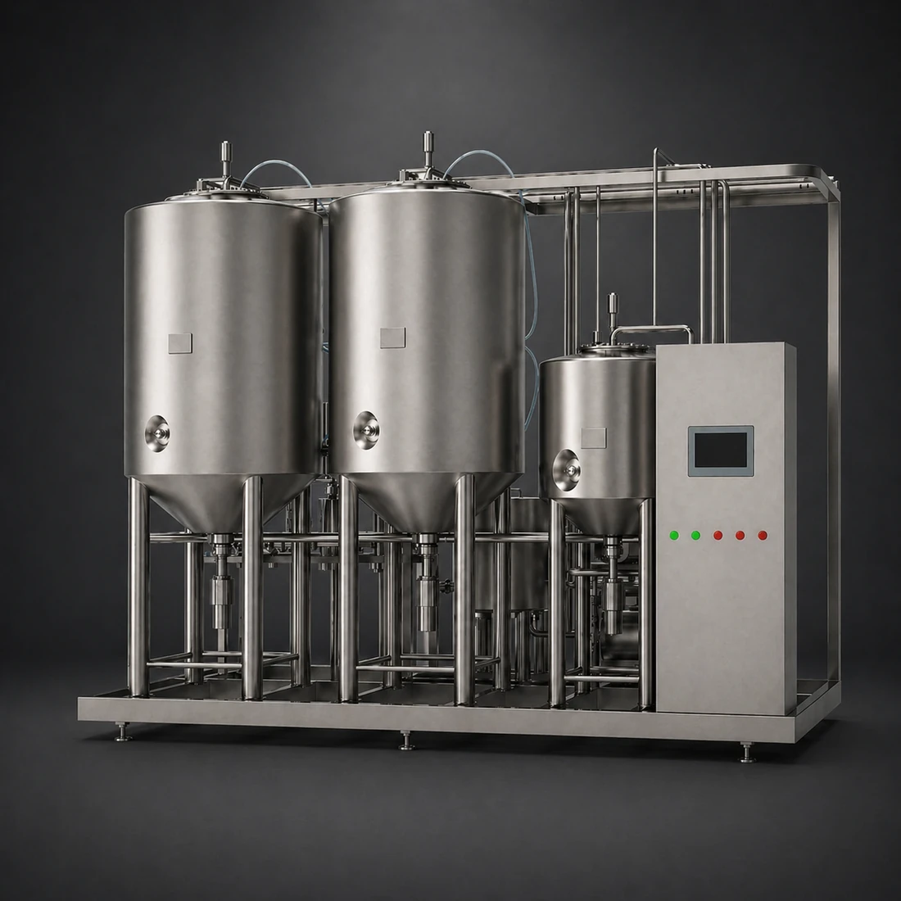
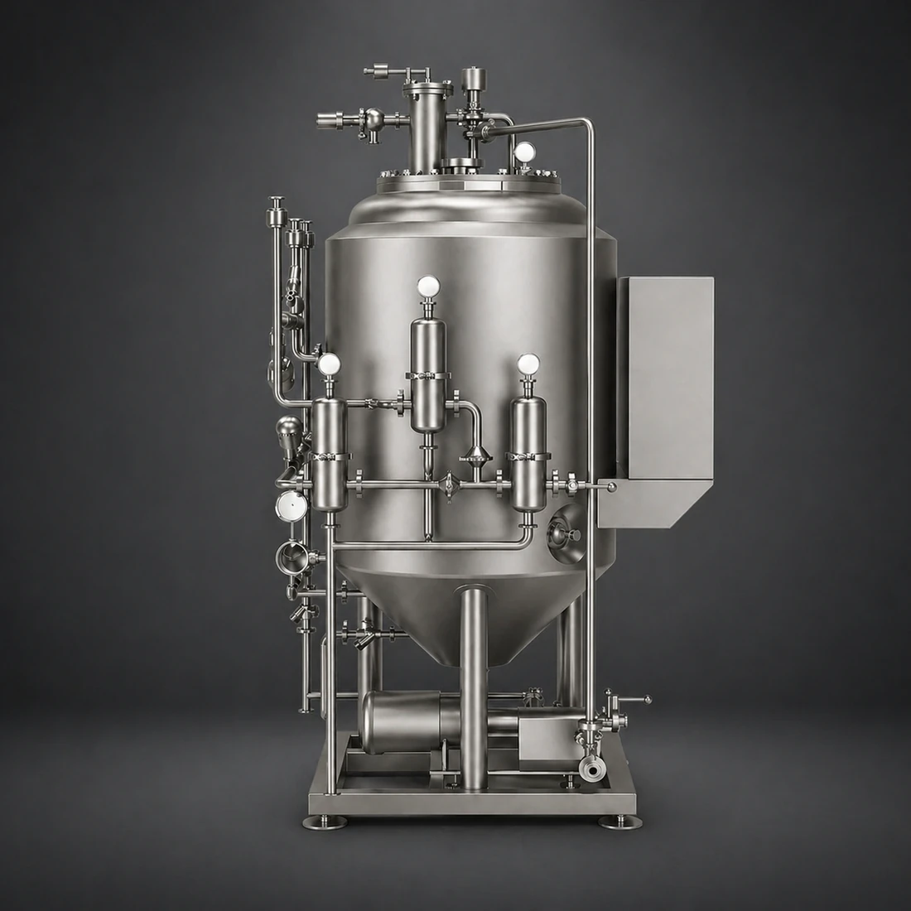

Additional Equipment
Supporting brewery equipment for material handling, yeast management and practical process-side production tasks.
Five equipment types available
- Malt handling, conveying and dry hopping tools for practical brewhouse support.
- Yeast propagation equipment to support repeatable pitching and culture management.
Additional equipment products
-

Malt handling
Malt Mill
Placeholder category copy for malt milling equipment supporting controlled grist preparation ahead of brewing.
-

Material handling
Cable Conveyor
Placeholder category copy for enclosed conveying systems moving malt or other dry material between process stages.
-

Yeast management
Yeast Propagation System
Placeholder category copy for full propagation systems supporting culture growth, handling and pitching consistency.
-

Yeast management
Yeast Propagation Tank
Placeholder category copy for standalone propagation vessels used within wider yeast handling or process-support workflows.
-

Process support
Dry Hopping Gun
Placeholder category copy for controlled dry hop addition equipment designed to reduce loss and improve dosing practicality.